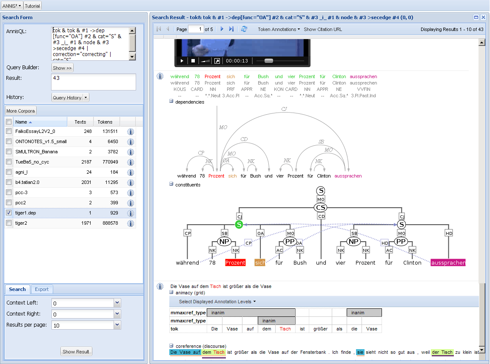
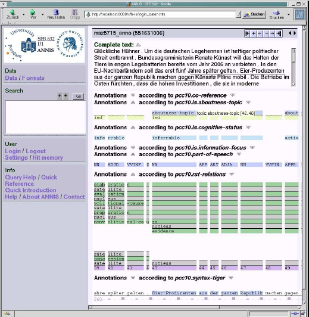

ANNIS2
ANNIS2 was developed within SFB632/D1 between 2008-2013. The
final release version of ANNIS2 is version 2.2.1. Below you can
find download links and documentation for this version. Presently
ANNIS2 development has been discontinued and work is focused on
the ANNIS3 series.

Latest ANNIS2 Documentation
Download ANNIS2
Final ANNIS Distributions:
Older distributions:
ANNIS1
Accessing ANNIS1
The first prototype of ANNIS was developed by Tillmann Wegst
from August 2003 to April 2004. This prototype was phased out of
use in 2008. The prototype supports most of the functionality
offered by PAULA data and the ANNIS Query Language, however it is
limited to grid visualizations for all data types.

Downloading and Installing ANNIS1.local
ANNIS1.local is a locally installable version of ANNIS1
intended for work in single user mode with one's own local
corpora.
|
|
- Java 1.4.1 or higher.
- Apache Tomcat Server
- Linux, Apple Mac OS X, and Windows XP (with Windows
some errors may occur)
|
|
|
- If no server is installed at your system
- Install Schroedinger.
Download
here.
- Download the ANNIS-zip archive here and unpack it.
- Start "Schroedinger" and deploy the unpacked
ANNIS.local directory.
- Call ANNIS.local in your local browser with
http://localhost:8080.
- Installing ANNIS on an existing server
- Download the ANNIS-zip archive here and unpack it.
- Deploy the ANNIS.local web application in your
server system.
|
|
|
- ANNIS.local v0.11
(latest release, June 03 2007)
-
Schroedinger (if you need to install an Apache Tomcat
server, we recommend downloading the 'Tomcat in a
Box')
|
|
|
- A first version of a quick introduction to
ANNIS.local is available: "First Steps with
ANNIS1.local" (PDF)
- A first version of a quick introduction to the ANNIS
Query Language is available: "Short Introduction to
the ANNIS Query Language" (PDF)
- A lot of the documentation is in German only at the
moment.
- "Einführung in die Benutzung von ANNIS,
August 2004" (PDF)
- "Hilfe zur Suche in ANNIS, August 2004"
(PDF)
|